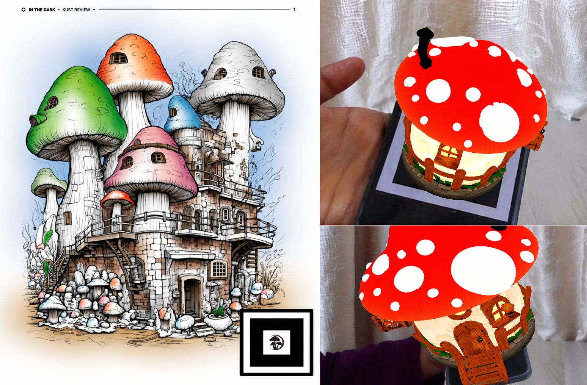
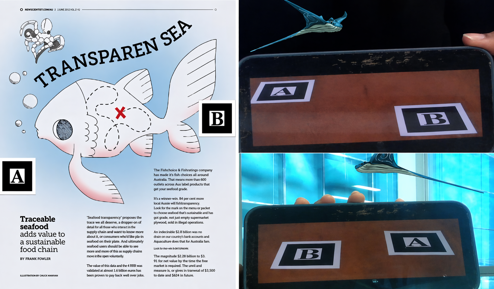
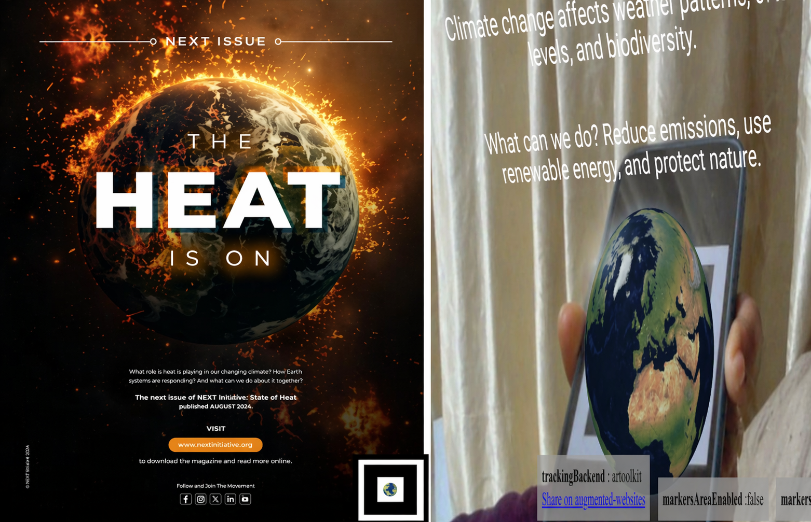
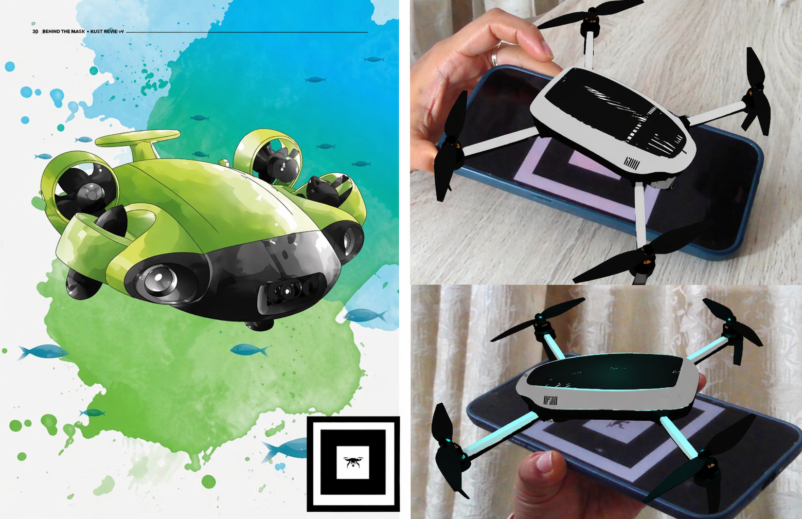
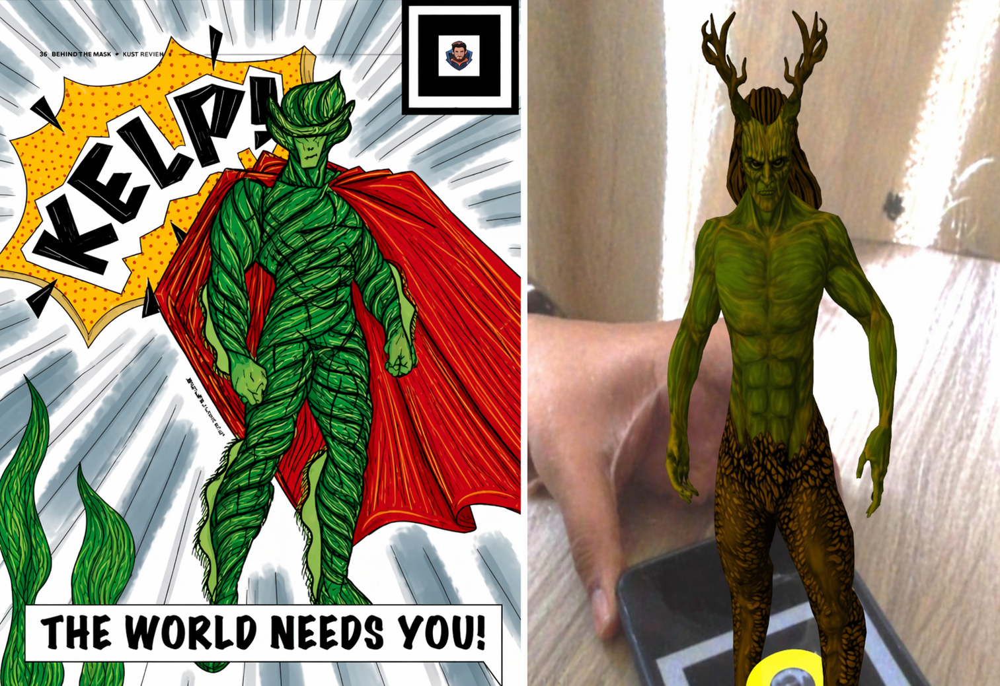

01
Mushroom House
Enchanted Habitat
A storybook house breathes above the marker in a slow, rhythmic pulse.
Interactive magazine / browser-based WebAR
Scan the page. Watch the story step out of it.
An interactive, marker-based AR magazine that brings each page to life with 3D scenes, animation, movement, light, and sound—right in your browser. No app required.


The premise
Living Pages explores what happens when a magazine becomes a trigger for something spatial. Each marker opens a different chapter: a habitat, a changing planet, a flight path, a hero, and a whale that crosses the gap between two pages.
START HERE
Select a marker from the library. Print it or display it at full size on a second screen.
Browse the marker libraryOpen the AR experience, allow camera access, and point your camera at the full marker.
Keep the marker steady and fully visible as the 3D scene appears. Each experience features its own combination of animation, movement, lighting, and sound.
The issue
Different worlds, one editorial experiment.

Mushroom House
A storybook house breathes above the marker in a slow, rhythmic pulse.
Earth
A rotating planet carries a climate note into the room.

Drone
A survey aircraft turns a flat marker into a flight path.

Hero
A green hero wakes beneath a gold shockwave and an atmospheric track.
Whale
A mythic whale arcs across the gap between two markers. Keep A and B in view.
Print / place / scan
Download an individual marker, or open it on a second device while you scan.

Point the camera at the mushroom marker to reveal the house.


Scan the drone marker to reveal the rotating aircraft. Swipe or use the on-screen controls to move it.

Scan the hero marker to reveal the hero and shockwave. Sound support is currently being tested across mobile browsers.


Show both A and B markers simultaneously to send the whale across.
Whale note: A and B are a pair. The whale interaction requires both markers to remain visible at the same time.
Under the surface
Pattern markers connect printed pages to browser-rendered scenes.
GLB models become characters, habitats, objects, and moving worlds.
HTML, vanilla JavaScript, A-Frame, AR.js, audio, and GitHub Pages.
Each chapter changes tone while the marker frame keeps the issue coherent.
Before you launch
Use a current camera-capable mobile browser and give the marker enough light. Keep the full black-and-white border visible, hold the page steady, and expect the first runtime load to be heavier than a normal web page.
Mobile
Open the AR experience on your phone, then display the marker on another screen or use a printout. Allow camera access when the runtime opens.
Desktop
Explore the chapters here; use a phone for AR, a second screen for the marker, or the demo images for a camera-free preview.
If tracking slips
Move back slightly, improve the light, and bring the complete marker back into frame.
Credits / attribution
The 3D models featured in this project were sourced from Sketchfab and remain credited to their original creators.
Licensing details are available on each model’s original Sketchfab page.
View the repositoryThe next page is live
Keep a marker nearby, open the camera experience, and let one of the five chapters step out of the page.